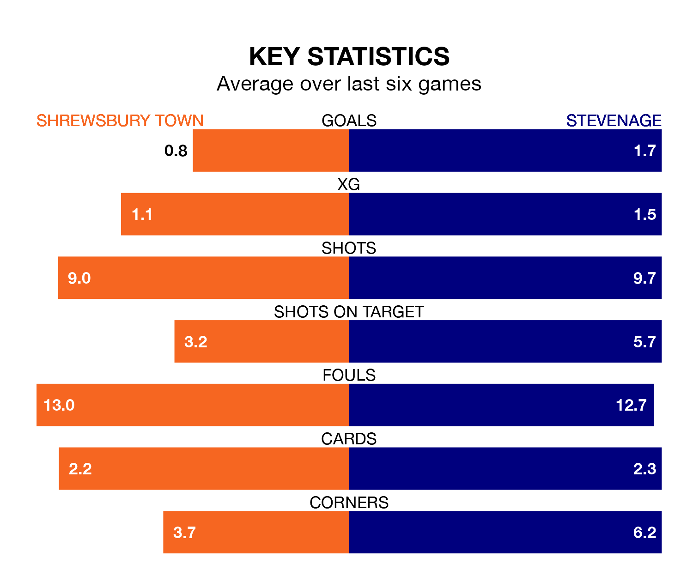

Stevenage are strong favourites to take all three points despite Shrewsbury Town's home advantage in Saturday's match at the Croud Meadow.
*Betting Company* are offering odds of 1.75 on Stevenage sealing the win, with the visitors sitting seventh in EFL League One table.
Shrewsbury, who are 16th in the league and 13 points behind the Boro, are priced at 4 to win. A draw is set at 3.25.
In Jamie Reid, Stevenage have one of the league's most on-form strikers so far this season. He has notched 14 goals in 24 appearances, to sit third in the scoring charts.
Shrewsbury's top scorers, with three goals each, are Daniel Udoh and Cheyenne Dunkley.
With 17 goals in 26 games so far this season, Town are the league's lowest scorers with 0.7 goals per game. And they are conceding more than average, letting in 36 goals at a rate of 1.4 per game.
The Boro, meanwhile, are above average scorers, with 1.5 goals per game, compared to a league average of 1.3. They have conceded 1.0 goal per game.
The Shrews are in disappointing form in EFL League One, with two wins and four losses from their last six games.
With two wins and two draws over that period, the away side's form is slightly better – they have taken eight points from 18, compared to the hosts' six.
Shrewsbury's last match was on January 1, a 3-1 win against Fleetwood Town, with Dunkley, Jordan Shipley and Nohan Kenneh getting the goals for the Shrews.
Stevenage lost 2-1 against Portsmouth last time out, also on January 1, with Louis Thompson on the scoresheet.
Updated: 11:29, 08/01/24